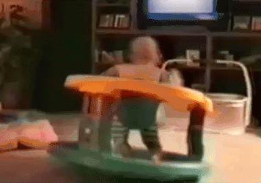
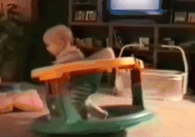
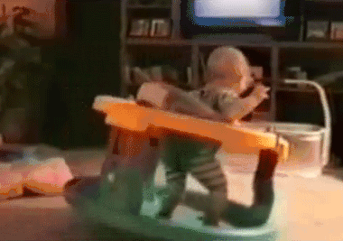
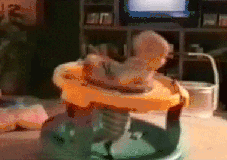
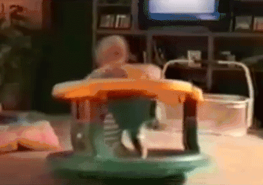
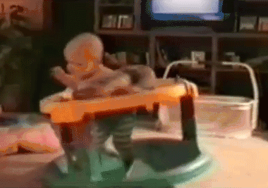
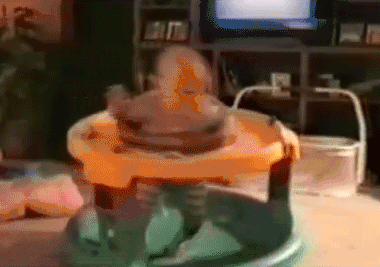
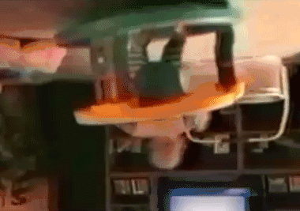

MRI for babies
please observe a baby precessing around its gravity axis. Spinning like a pro, keeping constant precession frequency of apprx. 1.4Hz (1 spin every 0.7 second). This is very similar to a hydrogen proton spinning around the main magnetic field.
Now, we know that there are a lot of hydrogen protons in a unit of area. Because the brain is made out of a lot of water. So let's imagine there are more spinning babies in the given room as well.
|  |  |  |  | |
|  |  | |||
However, you may notice that the babies are spinning randomly. Which is expected because they are babies and everything they do is random yet somewhat deliberate and genius. Upon a couple of observation, we noticed that the babies start to enjoy themselves when they are spinning in unison with their pals. They really enjoy matching their friends' spinning frequency and that makes them laugh. Unfortuntaly, because they are babies, they do not have the skill or strength to match that frequency. Therefore, we need an external force, a parent or teacher, to match them together. The teacher goes to each individual baby and makes sure that they are spinning with same frequency and phase as the others. Et voilà, below observe the unison.
The babies have been put "in phase" with each other and thus creating a net transverse enjoyment. Just like a the hydrogen protons when put in phase create a net transverse magnetization. Now, when in sync, the babies are having a blast, really loving it and laughing a lot which we can hear with our ears, i.e., measure with RF coils. And that makes us happy! We can now measure their average enjoyment in the room. Their enjoyment will be gradually decreasing over time. Not only because of boredom, but also some of the stools may have tighter screws or the differences in individual baby weight and or the baby's sense of humor etc., these all result in some babies going out of phase sooner than the others. These time differences can tell us a lot about the individual baby, its enjoyment, its health and many more! Important stuff! Now some of you may know that in case of hydrogen protons, some of them align with and some against the main magnetic field. To incorporate this into our baby example, let's create a transcontinental classroom and consider a baby in europe and a baby in australia.
This requires extra thought however the message is that babies from northern hemisphere and southern hemisphere need each other otherwise we can't achieve full baby enjoyment. Also MRI and stuff. Thank you for reading!